画笔
单色画刷 SolidBrush
影线画刷 HatchBrush
纹理画刷 TextureBrush
线性变换画刷 LinearGradientBrush
路径渐变画刷 GraphicsPath
画笔
构造函数
Pen
::Pen(Brush*,REAL with)
Pen::Pen(Color&,REAL)
设置线条风格
Status SetDashStyle(DashStyle dashStyle);
| dashStyle取值 | 含义 | 效果 |
| Gdiplus::DashStyleSolid | 直线 | 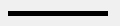 |
| Gdiplus::DashStyleDash | 虚线 | 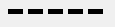 |
| Gdiplus::DashStyleDot | 点线 | 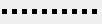 |
| Gdiplus::DashStyleDashDot | 点虚线 | 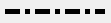 |
| Gdiplus::DashStyleDashDotDot | 双点虚线 | 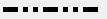 |
| Gdiplus::DashStyleCustom | 自定 线性风格 | 需要调用 SetDashPattern函数设置线性风格 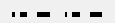 |
Status SetDashPattern(
//长度数组 其中每个元素分别表示 线段长 相邻下一个为空白长 相邻下一个为线段长...
const REAL *dashArray,
INT count//数组长
);
//获取线性风格
Status GetDashPattern( REAL *dashArray,
INT count
);
设置对齐风格
Status SetAlignment(PenAlignment penAlignment);
| penAlignment取值 | 含义 | 效果 |
| Gdiplus::PenAlignmentCenter | 画笔中心点居中 | 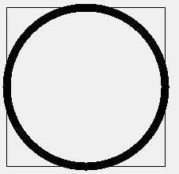 |
| Gdiplus::PenAlignmentInset | 嵌入 | 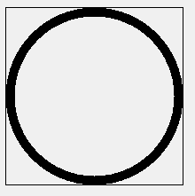 |
线帽风格
起点外观 Status SetStartCap(LineCap startCap);
终点外观 Status SetEndCap(LineCap endCap);
| LineCap取值 | 含义 | 效果 |
| Gdiplus::LineCapFlat | 平直 | 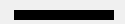 |
| Gdiplus::LineCapSquare | 矩形 | 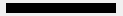 |
| Gdiplus::LineCapRound | 圆形 | |
| Gdiplus::LineCapTriangle | 三角形 | |
| Gdiplus::LineCapNoAnchor | 没有 | 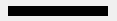 |
| Gdiplus::LineCapSquareAnchor | 矩形 高度大于pen的宽 | 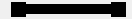 |
| Gdiplus::LineCapRoundAnchor | 圆形 直径大于pen的宽 | |
| Gdiplus::LineCapDiamondAnchor | 菱形 |  |
| Gdiplus::LineCapArrowAnchor | 三角形 直线端点为三角形一角 | |
| Gdiplus::LineCapCustom | 自定义风格(调用SetCustomEndCap/SetCustomStartCap)确定风格 |
Status SetCustomStartCap( const CustomLineCap *customCap);
CustomLineCap( const GraphicsPath *fillPath,
const GraphicsPath *strokePath,
LineCap baseCap,
REAL baseInset
);
画笔透明
构造Pen时传入的Color带入alpha参数 Color(a,r,g,b);
画笔连接点
调用pen的SetLineJoin函数设置
Status SetLineJoin(LineJoin lineJoin);
| lineJoin取值 | 含义 | 效果 |
| Gdiplus::LineJoinMiter | 斜接 |  |
| Gdiplus::LineJoinBevel | 斜切 | |
| Gdiplus::LineJoinRound | 圆角 | |
| Gdiplus::LineJoinMiterClipped | 剪切斜接 | 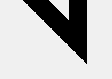 |
影线画刷 SolidBrush
描述以重复的小正方体 填充区域的画刷
构造函数
HatchBrush( HatchStyle hatchStyle,//风格
const Color &foreColor, //前景色
const Color &backColor //背景色
);
hatchStyle值在枚举Gdiplus::HatchStyle中
| 取值 | 效果 |
| HatchStyle10Percent | 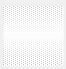 |
| ... | 数字(代表百分之多少)越大点越密集(05,10,20,25,30,40,50,60,70,75,80,90) |
| HatchStyle30Percent | 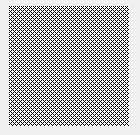 |
| 取值 | 效果 |
| HatchStyleBackwardDiagonal | 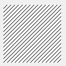 |
| HatchStyleCross | 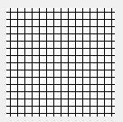 |
| HatchStyleDarkDownwardDiagonal | |
| HatchStyleDarkHorizontal | 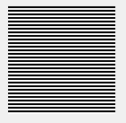 |
| HatchStyleDarkUpwardDiagonal | 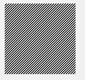 |
| HatchStyleDarkVertical | 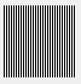 |
| HatchStyleDashedDownwardDiagonal | 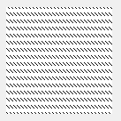 |
| HatchStyleDashedHorizontal | 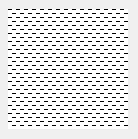 |
| HatchStyleDashedUpwardDiagonal | 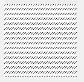 |
| HatchStyleDashedVertical | |
| HatchStyleDiagonalBrick | 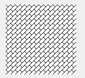 |
| HatchStyleDiagonalCross | 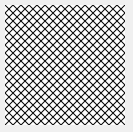 |
| HatchStyleDivot | 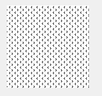 |
| HatchStyleDottedDiamond | 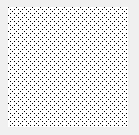 |
| HatchStyleDottedGrid | 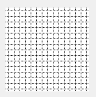 |
| HatchStyleForwardDiagonal | 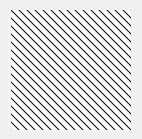 |
| HatchStyleHorizontal | 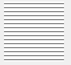 |
| HatchStyleHorizontalBrick | 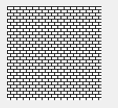 |
| HatchStyleLargeCheckerBoard | |
| HatchStyleLargeConfetti | |
| HatchStyleLargeGrid | 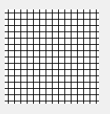 |
| HatchStyleLightDownwardDiagonal | 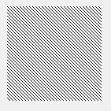 |
| HatchStyleLightHorizontal | 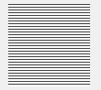 |
| HatchStyleLightUpwardDiagonal | 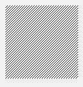 |
| HatchStyleLightVertical | 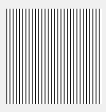 |
| HatchStyleMax | 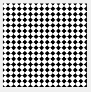 |
| HatchStyleMin |  |
| HatchStyleNarrowHorizontal | |
| HatchStyleNarrowVertical | 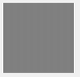 |
| HatchStyleOutlinedDiamond | 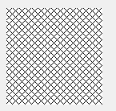 |
| HatchStylePlaid | 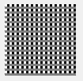 |
| HatchStyleShingle | 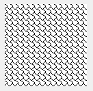 |
| HatchStyleSmallCheckerBoard | 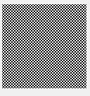 |
| HatchStyleSmallConfetti | 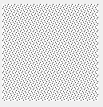 |
| HatchStyleSmallGrid | 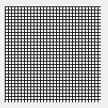 |
| HatchStyleSolidDiamond | 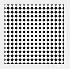 |
| HatchStyleSphere | 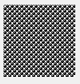 |
| HatchStyleTrellis | 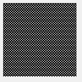 |
| HatchStyleVertical | 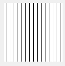 |
| HatchStyleWave | 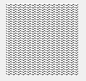 |
| HatchStyleWeave | |
| HatchStyleWideDownwardDiagonal | |
| HatchStyleWideUpwardDiagonal | |
| HatchStyleZigZag |
纹理画刷 TextureBrush
描述 将图片在目标区域平铺
(1)定制纹理画刷使用的基本图案(2)设置画刷图案大小
(3)确定图案排列方式
构造函数
TextureBrush::TextureBrush(Image*,wrapMode,RectF&)
TextureBrush::TextureBrush(Image*,Rect&,ImageAttributes*)
TextureBrush::TextureBrush(Image*,WrapMode,INT x,INT y,INT with,INT height)
TextureBrush::TextureBrush(Image*,WrapMode,REAL,REAL,REAL,REAL)
TextureBrush::TextureBrush(Image*,RectF&,ImageAttributes*)
TextureBrush::TextureBrush(Image*,WrapMode)
TextureBrush::TextureBrush(Image*,WrapMode,Rect&)
rect x y with height 等指定从图片中剪切出部分来平铺(指定区域不在图内不能成功构造画刷)wrapMode 指定如何排列图片
ImageAttributes 指定图案附加特征
缩放 调用TextureBrush的SetTransform函数
wrapMode取值
| 取值 | 描述 | 效果 |
| Gdiplus::WrapModeTile | 就是直接平铺 | |
| Gdiplus::WrapModeTileFlipX | 平铺 水平相邻位置图片翻转 | |
| Gdiplus::WrapModeTileFlipY | 平铺 垂直相邻位置图片翻转 |  |
| Gdiplus::WrapModeTileFlipXY | 平铺 水平和垂直相邻位置图片翻转 | |
| Gdiplus::WrapModeClamp | 只绘制一个图形 其他部位透明 |
旋转 平移 缩放
旋转
Status RotateTransform( REAL angle,//顺时针旋转角度
MatrixOrder order=Gdiplus::MatrixOrderPrepend
);
平移
Status TranslateTransform( REAL dx,//水平平移像素
REAL dy,//垂直平移像素
MatrixOrder order=Gdiplus::MatrixOrderPrepend
);
缩放
Status ScaleTransform( REAL sx,//水平放大或缩小倍数 1为不变
REAL sy,//垂直放大或缩小倍数
MatrixOrder order==Gdiplus::MatrixOrderPrepend
);
三个函数效果可叠加 同一个函数效果亦可叠加Status ResetTransform(VOID);函数清空效果
获取已经设置的风格Status GetTransform(Matrix* matrix);
线性变换画刷 LinearGradientBrush
描述 用逐渐变换的色彩填充
构造函数
LinearGradientBrush::LinearGradientBrush(PointF&,PointF&,Color&,Color&)
LinearGradientBrush::LinearGradientBrush(Rect&,Color&,Color&,REAL,BOOL)
LinearGradientBrush::LinearGradientBrush(RectF&,Color&,Color&,LinearGradientMode)
LinearGradientBrush::LinearGradientBrush(Point&,Point&,Color&,Color&)
LinearGradientBrush::LinearGradientBrush(Rect&,Color&,Color&,REAL,BOOL)
LinearGradientBrush::LinearGradientBrush(Rect&,Color&,Color&,LinearGradientMode)
两个PointF的直线方向渐变 渐变长度为直线长rect渐变画刷区域
BOOL画刷是否旋转
REAL画刷旋转的角度
LinearGradientMode画刷渐变方向
| LinearGradientMode取值(c1=(255,0,255)) | 方向 | 效果 |
| Gdiplus::LinearGradientModeVertical | 上到下 | |
| Gdiplus::LinearGradientModeHorizontal | 左到右 | |
| Gdiplus::LinearGradientModeForwardDiagonal | 左上到右下 | |
| Gdiplus::LinearGradientModeBackwardDiagonal | 右上到左下 |
把渐变画刷的区域看成 一个图片 渐变画刷就相当于纹理画刷 so
可以调用SetWrapMode RotateTransform TranslateTransform ScaleTransform ResetTransform等
参见纹理画刷
多色渐变
构造LinearGradientModeVertical后调用LinearGradientModeVertical的SetInterpolationColors函数
Status SetInterpolationColors( const Color *presetColors,//色彩数组
const REAL *blendPositions,//颜色合成点位置数组 以n%表示 比如 起点0.0 中点0.5 终点1.0
INT count//数组长度
);
合成因子
描述
合成因子定义了颜色渐变程度 100% 完全转换 0丝毫未转换
对于多色渐变 代表了每个渐变过程的渐变程度
Status SetBlend( const REAL *blendFactors,//合成因子数组
const REAL *blendPositions,//合成点位置数组
INT count//数组大小
);
路径渐变画刷 GraphicsPath
描述 由路径指定区域 从区域中心点向周围渐变 区域外的部分透明
将路径画刷的区域看出是纹理画刷的图片so 可调用相应填充函数
构造函数
PathGradientBrush::PathGradientBrush(Point*,INT,WrapMode)
PathGradientBrush::PathGradientBrush(PointF*,INT,WrapMode)
PathGradientBrush::PathGradientBrush(GraphicsPath*)
函数
| 函数 | 描述 |
| Status SetCenterPoint(const Point &point); | 设置中心点位置 |
| Status SetCenterColor(const Color &color); | 设置中心点颜色 |
| Status SetSurroundColors( const Color *colors, INT *count ); | 设置端点颜色 |
| Status SetInterpolationColors( const Color *presetColors, const REAL *blendPositions, INT count ); | 多色渐变 详见渐变画刷 |
| Status SetGammaCorrection(BOOL useGammaCorrection); | 启用Gamma校正 以保证在不同系统效果一直 |
| Status SetFocusScales( REAL xScale,//水平比例n% 1.0全部 0.5一半 REAL yScale ); | 设置缩放焦点(既中心点颜色所站比例) |